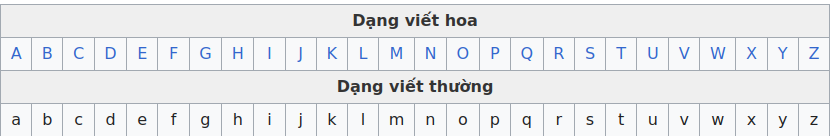
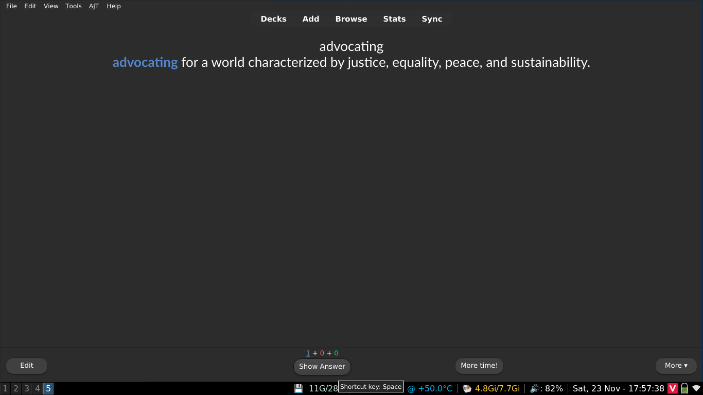
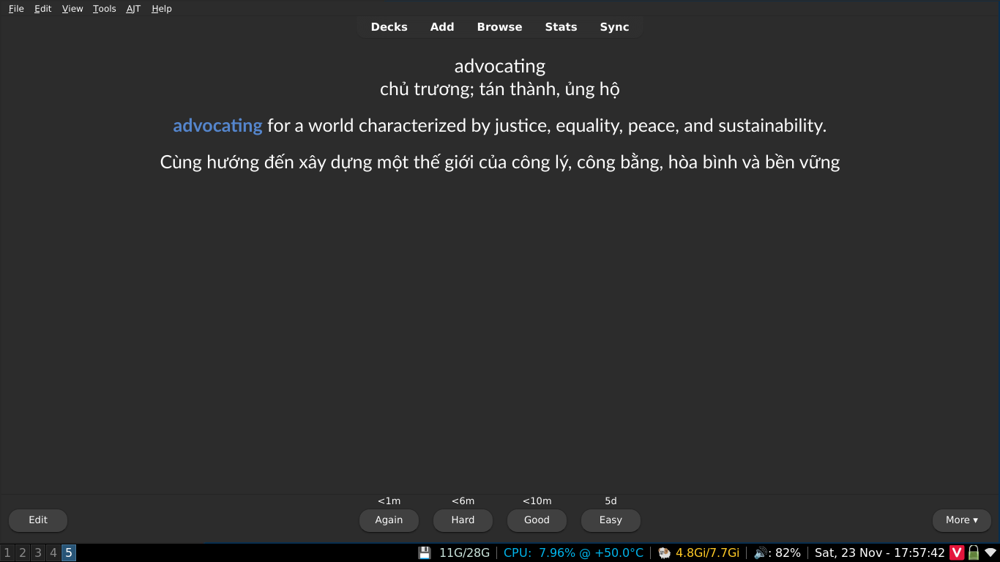

Một hướng dẫn học Tiếng Anh¶
Nếu bạn không cần đọc phần mở đầu, hãy đến luôn phần Cách để học Tiếng Anh.
1.1 Nhiều người học ngoại ngữ "thất bại" do đâu?¶
Có một số lượng không nhỏ những người bắt đầu học Tiếng Anh để có thể trải nghiệm nội dung bằng Tiếng Anh hoặc để có thể nói Tiếng Anh trôi chảy. Dù vậy, không ít người sau nhiều năm học vẫn không thể đạt được mục tiêu ấy. Có phải do việc học ngoại ngữ quá khó? Hay do chưa đủ chăm?
Có lẽ vấn đề không phải nằm ở những người học ấy, mà là ở phương pháp. Trong việc học ngôn ngữ, phương pháp học của bạn tạo ra sự khác biệt rất lớn trong khả năng và tốc độ tiến bộ ngoại ngữ của bạn.
Khó có thể đạt được những mục tiêu như vậy chỉ với các phương pháp học ngoại ngữ truyền thống. Nhiều người "thất bại" vì không thực hiện immersion trong quá trình học.
Immersion để chỉ việc nghe hoặc đọc nội dung Tiếng Anh. Kiểu như xem Harry Potter không Vietsub chẳng hạn.
1.2 Vấn đề của phương pháp học truyền thống¶

Học ngoại ngữ theo phương pháp "truyền thống" thì thường sẽ kiểu như này:
- Học các câu cơ bản như câu chào hỏi, tự giới thiệu.
- Học cấu trúc ngữ pháp và từ vựng cơ bản.
- Nghĩ ra câu bằng cách trò chuyện với giáo viên hoặc bạn học hoặc bằng cách viết.
- Dịch các câu ví dụ từ Tiếng Việt sang ngôn ngữ đích (TL - Target Language) và ngược lại.
- Tra cứu thêm tài liệu về cấu trúc ngữ pháp và từ vựng trong sách giáo khoa hoặc xem video YouTube
- Thực hành hội thoại sử dụng kiến thức đã học.
- Tích lũy thêm nhiều cấu trúc từ vựng và ngữ pháp và lấy số lượng làm thước đo cho sự tiến bộ của bản thân
- Và cuối cùng là đến giai đoạn cuối, chuyển đến sống hoặc đi du lịch các nước nói Tiếng Anh với hy vọng có cơ hội rèn luyện kỹ năng của mình.
Bản thân việc học như này hoàn toàn ổn, nhưng chưa đủ để giúp bạn đạt được trình độ cao. Vấn đề là những người học thuộc nhóm trên không tương tác với ngôn ngữ thực tế.
Lấy bơi lội làm ví dụ: Bạn không thể chỉ mãi ở bể bơi dành cho trẻ con, đeo phao và hy vọng rằng mình sẽ thành thạo kỹ thuật bơi ở đó trước khi bước ra bể lớn. Làm như vậy sẽ không bao giờ khiến bạn trở thành một người biết bơi thực thụ. Cũng giống như bạn không thể trở thành vận động viên bơi lội chỉ bằng cách học lý thuyết và luyện động tác trên cạn, mà không bao giờ nhảy xuống nước thật.
Một ví dụ dễ liên hệ hơn: game đối kháng. Bạn sẽ không thể chơi giỏi chỉ bằng cách luyện với máy hoặc tập trong chế độ huấn luyện cả ngày. Muốn giỏi, bạn phải bước vào trận đấu thực sự – chơi với người thật, chấp nhận rằng mình có thể thua tơi tả. Đó mới là “chơi thật”.
Người mới học thường mắc một cái bẫy là cố gắng học lý thuyết (kiểu như ngữ pháp hay là nhồi từ vựng) cho đến khi hiểu hết mới thôi và không immerse vì chưa cảm thấy thoải mái hay sẵn sàng. Tuy nhiên, cần ngừng sử dụng tài liệu cho người mới học càng sớm càng tốt vì trên thực tế, bạn sẽ không bao giờ cảm thấy sẵn sàng nếu không bắt đầu tiếp xúc với ngôn ngữ thực tế và làm quen với nó.
Chủ nghĩa cầu toàn có thể là con dao hai lưỡi trong việc học ngôn ngữ. Tốn quá nhiều thời gian và công sức mà không đạt được nhiều kết quả, cố ghi nhớ từng chi tiết nhỏ nhất của những thứ không thực sự quan trọng trong cả quá trình học dài đấy.
Học một ngôn ngữ giống như leo núi vậy. Bạn có thể cố gắng leo mà không dùng đến bất kỳ công cụ hỗ trợ nào – và dù sẽ rất vất vả, nếu kiên trì, bạn vẫn có thể đến đích. Việc học theo cách truyền thống giống như đang chuẩn bị dây thừng để có thể leo núi dễ hơn. Nhưng bạn không thể chỉ ngồi đó chuẩn bị dây mãi – đến một lúc nào đó, bạn sẽ phải bắt đầu leo. Dù bạn có làm ra bao nhiêu dây đi nữa, thì việc leo núi vẫn sẽ khó khăn và tốn thời gian. Không có đường tắt – bạn phải thực sự bắt tay vào thực hiện.
1.3 Quy mô của ngôn ngữ¶
Ngôn ngữ thực sự quá rộng lớn. Có quá nhiều thứ vượt xa ranh giới trong một lớp học hoặc phương pháp dạy theo kiểu "x có nghĩa là y" (A is B) hoặc "x thực hiện hành động y" (A does B). Để thành thạo một ngôn ngữ ở cấp độ cao cần một lượng lớn "đọc" và "nghe" nội dung ngôn ngữ đích.
Và thường thì rất khó để hiểu tại sao họ lại dùng câu đó trong tình huống kia, hay từ này thay vì từ kia. Điều đó tạo nên một rào cản lớn cho người học – bởi vì bạn không thể chỉ học mỗi ngữ pháp và từ vựng mà mong nói được như người bản xứ.
Nếu không có những trải nghiệm cần thiết, việc cố gắng tự tạo câu ở ngôn ngữ mục tiêu thường khiến cho cách diễn đạt trở lên thiếu tự nhiên hoặc khó hiểu. Thêm nữa, việc không hiểu hoặc chưa hiểu rõ cách người bản ngữ sử dụng ngôn ngữ của họ khiến việc hiểu họ trở nên khó khăn hơn rất nhiều do không quen với cách diễn đạt bên ngoài phạm vi của tài liệu học tập.
Đây là lý do tại sao trong việc học ngoại ngữ cần có "immersion" - đọc và nghe những gì người bản ngữ viết và nói.
Học ngôn ngữ là một quá trình ghi nhớ các pattern (mẫu) trong vô thức thông qua comprehensible input. Điều này có nghĩa là, khi bạn hiểu điều gì đó (comprehensible) trong quá trình immersion, bộ não của bạn sẽ vô thức lưu mẫu (pattern) đó vào trong đầu để có thể sử dụng trong tương lai. Nó sẽ kiểu như: "Ê mày, có mẫu số 234 được sử dụng với mẫu số 82 và mẫu số 10 kìa".
Tại sao lại không nói về "biết ngữ pháp" hay "nhớ từ vựng"? Bởi đây không phải là cách xử lý ngôn ngữ tự nhiên. Một số người không phải là người bản ngữ Tiếng Anh và có thể là đã học ngữ pháp Tiếng Anh từ trước, nhưng họ sẽ chẳng mấy khi nghĩ về các cấu trúc ngữ pháp khi tương tác với Tiếng Anh hàng ngày.
1.4 Chấp nhận cảm giác khó chịu và mù mờ¶

Trong việc học ngôn ngữ hay trong bất cứ lĩnh vực nào đòi hỏi kỹ năng, bạn sẽ luôn gặp khó khăn trong một thời gian dài cho đến khi bạn tiến bộ hơn. Như đã nói ở trên, nhiều người học (mình cũng đã từng như vậy) cứ cố gắng học thật tốt một thứ gì đó trước khi sử dụng chúng trong thực tế.
Ví dụ, một người học khi cố học một cấu trúc ngữ pháp nào đó quá lâu và không chuyển sang những nội dung khác mà họ nên học.
↑ Đây là điều chúng ta cần tránh
Không dễ dàng gì để có thể hiểu hết quyển tiểu thuyết hay một bộ phim ngay lần đầu. Cần tới lần thứ ba, thứ tư, thứ năm và thậm chí thứ sáu để có thể học được điều gì đó.
1.5 "Immersion" là cái gì?¶
Immersion là khi bạn tương tác với nội dung tự nhiên bằng ngôn ngữ mục tiêu (ở đây là Tiếng Anh). Là nội dung KHÔNG hề được làm hoặc chọn lọc kỹ càng cho người học mà được làm bởi chính người bản ngữ cho người bản ngữ.
Việc đọc hướng dẫn này (hướng dẫn gốc được viết bằng Tiếng Anh) ngay bây giờ sẽ được tính là bạn đang "thực hành immersion Tiếng Anh", bởi vì hướng dẫn này không hề được đơn giản hóa hay giúp cho người học Tiếng Anh. Nó được viết cho những người nói Tiếng Anh ở mức độ bản ngữ/thành thạo. Vì vậy, khi bạn nghe hoặc đọc nội dung Tiếng Anh mà người Nhật cũng thường sử dụng, bạn đang thực hành immersion.
Theo thuật ngữ thì được gọi là input, nhưng mình thích dùng immersion hơn.
1.6 Cách tiếp cận "từ trên xuống" (top-down) trong việc học ngôn ngữ¶
Việc học một ngôn ngữ yêu cầu bạn phải hài lòng với việc không hiểu tất cả mọi thứ.
Điều này hoàn toàn khác so với cách học ở trường lớp, nơi chủ nghĩa hoàn hảo được tuyên dương dựa trên thành tích học và được xếp loại thông qua các tiêu chí hoặc các kỳ thi.
Những người học ở trên dễ cảm thấy nản vì không hiểu được tất cả hoặc phần nhiều khi tương tác với ngôn ngữ thực tế, cho dù đó là một bộ phim truyền hình, hay một quyển sách hoặc thậm chí chỉ là một cuộc hội thoại bình thường với người bản ngữ. Việc tiếp tục như vậy khi bạn hiểu rất ít nghe có vẻ không hợp lí, nhưng như đã nói ở các phần trước, học một ngôn ngữ cũng giống như nhảy vào hố sâu bất tận vậy.
Điều khiến việc học ngôn ngữ trở nên quá đỗi khác biệt so với các môn học ở trường là nó dựa trên việc sử dụng ngôn ngữ một cách tự nhiên và thực tế, thứ mà tài liệu học tập không thể truyền tải được. Vì vậy, cách duy nhất để làm quen với mọi thứ là chấp nhận sự mù mờ (low comprehension - độ hiểu thấp), vì càng tương tác với ngôn ngữ nhiều thì sẽ càng tiến bộ hơn.
Tất nhiên, chúng ta không chỉ thực hiện immersion mà không làm gì khác. Cũng cần học những thứ như ngữ pháp và từ vựng. Đồng thời, sử dụng từ điển để học từ trong quá trình immersion.
2.1 Cách học Tiếng Anh¶
Quá trình học tập ban đầu¶
Quá trình học tập mở đầu bao gồm bao gồm:
- Làm quen với Tiếng Anh.
- Học từ vựng cơ bản sử dụng Anki.
- Học ngữ pháp thông qua một danh sách phát trên YouTube.
- Bắt đầu immerse với comprehensible input cường độ cao. Đây là nhiệm vụ mà bạn cần dành phần lớn thời gian.
Bảng chữ cái¶
Bảng chữ cái Tiếng Anh (tiếng Anh: English alphabet) hiện đại là một bảng chữ cái Latinh gồm 26 chữ cái.

Dù Tiếng Anh và Tiếng Việt có cùng bảng chữ cái (các chữ cái Tiếng Anh thường không có dấu) nhưng cần lưu ý rằng khác với Tiếng Việt, cách viết và cách đọc trong Tiếng Anh không trùng khớp với nhau.
Học bảng phiên âm quốc tế (IPA)¶
IPA (International Phonetic Alphabet) là một hệ thống ký hiệu dùng để ghi lại cách phát âm thực tế của từ. Gần như toàn bộ từ điển Tiếng Anh, dù là trên giấy hay trực tuyến, đều sử dụng IPA để thể hiện cách một từ được phát âm.
IPA chỉ là một công cụ giúp bạn biết chính xác người bản ngữ phát âm từ đó như thế nào, thay vì phải tự đoán dựa trên mặt chữ. Điều này đặc biệt quan trọng trong Tiếng Anh, vì chính tả của Tiếng Anh rất thiếu nhất quán và không thể dùng để suy ra cách đọc một cách đáng tin cậy.
Một ví dụ điển hình là nhóm từ có cùng vần “ough”:
- through – IPA: /θɹu/
- thought – IPA: /θɑt/
- cough – IPA: /kɑf/
- though – IPA: /ðoʊ/
- bough – IPA: /bɑʊ/
- enough – IPA: /ɪˈnʌf/
- hiccough – IPA: /ˈhɪkəp/
Mặc dù các từ này có cách viết gần như giống nhau, cách phát âm của chúng lại hoàn toàn khác. Nếu chỉ dựa vào chữ viết, người học gần như không có cơ sở nào để đoán đúng. IPA giúp loại bỏ việc đoán mò đó thông qua việc cung cấp một cách biểu diễn phát âm nhất quán và rõ ràng.
Tuy nhiên, cần nhấn mạnh rằng IPA không giúp bạn phát âm hay hơn chỉ bằng việc nhìn ký hiệu. Phát âm tốt đến từ việc bạn nghe đủ nhiều Tiếng Anh thực tế, trong ngữ cảnh có thể hiểu được (Comprehensible Input), và tiếp xúc với ngôn ngữ đó một cách thường xuyên (Immersion). Đó mới chính là cách con người tiếp nhận ngôn ngữ.
Vai trò đúng của IPA là hỗ trợ quá trình này. Khi bạn nghe một từ mới, IPA giúp bạn kiểm tra lại mình đã nghe đúng chưa, nhận ra những âm mình dễ bỏ sót hoặc nhầm lẫn, và tránh hình thành thói quen phát âm sai ngay từ đầu. IPA không thay thế việc nghe người bản ngữ nói, mà giúp bạn hiểu chính xác hơn những gì bạn đang nghe.
Vì vậy, bạn không cần học thuộc toàn bộ bảng IPA trước khi bắt đầu. Tất nhiên, bạn vẫn có thể học cách phát âm IPA với điều kiện bạn đã nghe Tiếng Anh đủ lâu (Bạn tự áng chừng thôi, mình nghĩ là cứ ít nhất sau 200 giờ nghe đi).
Bạn có thể học qua IPA thông qua một hướng dẫn trên mạng bất kì (của BBC hoặc của Dan Hauer).
2.2 Học từ vựng¶
Trong quá trình học từ vựng, mình gợi ý mọi người nên bắt đầu bằng cách học khoảng 1500 từ vựng Tiếng Anh thường dùng sử dụng phần mềm có tên là Anki.
Anki là một phần mềm flashcard (thẻ ghi nhớ) được thiết kế để giúp bạn ghi nhớ lượng lớn thông tin thông qua active recall và lặp lại ngắt quãng (spaced repetition), chẳng hạn như từ vựng.
Anki là một ứng dụng tương đối khó sử dụng nên trước khi bắt đầu, bạn nên xem một video hướng dẫn cơ bản cách sử dụng Anki:
[TODO: Mình sẽ để video ở đây]
Để tải xuống ứng dụng, bạn truy cập Trang tải xuống của Anki. Ứng dụng hoàn toàn miễn phí trên máy tính (Windows, MacOS hay Linux) và Android, trên iOS thì là 30 đô =)) (Mình thấy rất đáng tiền nên mọi người có thể cân nhắc mua nhé).
Bộ thẻ dành cho người mới bắt đầu mà mình gợi ý là 3000 từ tiếng anh có thể tải xuống thông qua đường dẫn này (Kéo xuống là thấy nút Download).
Sau khi quá trình tải xuống hoàn tất, hãy thêm bộ thẻ vào Anki bằng cách chọn "Import file" và điều hướng đến chỗ mà bạn đã tải tệp xuống (.apkg) rồi chọn "Import" ở trên cùng bên phải.
Hướng dẫn sử dụng Anki nhanh¶
Trước khi bắt đầu học, bạn nên thay đổi một số cài đặt. Nhấp vào biểu tượng răng cưa bên cạnh bộ thẻ và tiếp tục Options.
Thay đổi Maximum reviews/day từ 200 ĐẾN 9999. Đừng lo lắng về con số này, số lượng Reviews (Thẻ bạn cần ôn tập trong Anki) của bạn có thể sẽ không bao giờ đạt đến mức cao như vậy, nó chỉ giúp bạn vượt qua giới hạn review hàng ngày để có trải nghiệm tối ưu.
Đối với New cards/day, 20 có thể hơi quá khó với một số người. Nếu bạn cảm thấy áp lực khi học 20 từ mới mỗi ngày, hãy thử giảm con số xuống còn 10 hoặc thấp hơn.
Khi bạn bắt đầu học bộ thẻ từ vựng, thẻ đầu tiên là thẻ giới thiệu bộ thẻ. Bạn có thể xóa thẻ này bằng cách chọn "More" và chọn "Delete Note"
Anki giúp bạn ghi nhớ mọi thứ bằng cách kiểm tra khả năng nhớ nội dung ở mặt sau thẻ. Kiểm tra xem liệu bạn có biết nghĩa và cách đọc từ đó hay không. Mọi thứ khác trên thẻ chỉ để hỗ trợ bạn trong quá trình học.

Khi thấy một thẻ Anki bạn chưa học (thẻ mới), nên chọn Show Answer để có thể thấy những gì ở mặt sau của thẻ.

Khi đã xem xong nội dung thẻ rồi, hãy nhấn Again (Bằng với việc "Ôn lại"). Với những thẻ tiếp theo, hãy làm tương tự vì đây cũng là thẻ mà bạn thấy lần đầu.
Lần tiếp theo bạn nhìn thấy thẻ đó là khi kiểm tra lại nội dung mặt sau của thẻ. Hãy cố gắng hết sức để nhớ lại nghĩa và cách đọc ở mặt sau thẻ và tự chấm điểm!
Về cơ bản, đây là cách chúng ta học từ vựng ở giai đoạn mới bắt đầu.
Khi bạn đã hoàn thành các thẻ mới trong ngày, hãy nhớ quay lại vào ngày hôm sau để ôn tập lại các từ đã học.
2.3 Ngữ pháp¶
Việc học ngữ pháp tương đối quan trọng trong việc học Tiếng Anh. Có rất nhiều tài liệu ngữ pháp ngoài kia, tốt cũng có mà không tốt cũng có. Chỉ có một nguồn học ngữ pháp là không đủ cho tất cả mọi người.
Dưới đây là một số hướng dẫn được xếp hạng dựa trên mức độ gợi ý cho những người mới bắt đầu. Không cần phải học từng hướng dẫn một, chỉ cần chọn một hướng dẫn mà bạn thấy phù hợp với bản thân:
- Study English Grammar - Văn Phạm - Giải thích ngữ pháp rõ ràng, không quá khó hiểu và tập trung vào ngữ pháp Tiếng Anh thay vì cấu trúc ôn thi. Nếu bạn không thích đọc thì có thể xem danh sách bài giảng này.
- ngày qua - một hướng dẫn ngữ pháp tiếng anh rất chi là cơ bản
Đây là thời điểm tốt nhất để bắt đầu Immersion khi bạn đã học được một số cấu trúc ngữ pháp mới. Xem cách áp dụng ngữ pháp đã học vào thực tế sẽ giúp hiểu rõ hơn về chúng.
2.4 Immersion cho tân thủ¶
Ở phần 1.3, mình đã nói về comprehensible input. Đây là input mà bạn có thể hiểu được, cứ mỗi vài câu lại có một số mảnh ghép bị thiếu. Với kiểu immersion này, trong tiềm thức bạn sẽ tự điền thêm vào những phần bạn thấy chưa hiểu bằng cách đoán ý dựa trên ngữ cảnh, đó là lý do tại sao kiểu input này lại vô cùng hữu ích cho việc học ngôn ngữ.
Nhưng có một vấn đề. Bạn sẽ làm gì nếu không có nguồn comprehensible input? Là người mới bắt đầu, không có nội dung nào là dễ cả. Trên thực tế, đây là lý do tại sao mọi người thường lạc lối và bắt đầu đọc từ tài liệu này sang tài liệu khác. Mặc dù incomprehensible input cũng có những tác dụng nhất định và hỗ trợ cho việc học, nhưng sẽ rất khó để có thể vượt qua rào cản ban đầu ấy.
Việc không hiểu được nội dung mình muốn tiêu thụ khá khó chịu, trừ khi bạn có một hướng tư duy cụ thể về nó - cảm thấy vui khi biết rằng mình đang tiến bộ dần dần kể cả khi khó có thể thấy một cách rõ rệt. Tuy nhiên, để duy trì tư duy này mọi lúc không hề dễ dàng, không nên dựa vào nó để làm động lực thúc đẩy cho sự kiên trì trong học tập - chìa khóa số một để thành thạo bất kỳ kỹ năng nào.
Vậy làm cách nào để không phải cảm thấy áp lực khi phải tiêu thụ các nội dung khó hiểu?
Chọn những gì bạn thích. Media thực sự khá giải trí vì nhiều lý do khác nhau khác ngoài việc học ngôn ngữ. Bằng cách chọn Media có tính giải trí, thư giãn và có giá trị cao bất kể cấp độ ngôn ngữ nào, chúng ta có thể duy trì liên kết của bản thân với ngôn ngữ và có động lực để tiếp tục immerse. Dần dần, khi trải nghiệm ngôn ngữ phát triển, chúng ta sẽ thấy mình hiểu nhiều hơn và mục tiêu từng tưởng chừng như không thể đó là tìm comprehensible input giờ đây đã trở thành một điều hiển nhiên, với mục tiêu mới là tiếp tục tìm những nội dung khó hơn để thúc đẩy bản thân tiếp tục học.
2.5 Cách immerse¶
Đọc & Từ điển¶
Để giúp cho việc đọc Tiếng Anh trở lên dễ dàng hơn thì có thể Yomitan trên trình duyệt. Đọc hướng dẫn tải xuống
Để tra cứu từng từ riêng lẻ, bạn có thể sử dụng Cambridge Dictionary Anh - Việt, ứng dụng cho điện thoại thì có Từ điển Anh Việt ProDict cho Android và Từ điển Anh Việt ProDict cho iOS.
Lựa chọn nội dung Immersion¶
Chọn bất cứ nội dung gì bạn muốn. Nó có thể là phim, drama, tiểu thuyết, game hoặc YouTube. Nếu bạn không nghĩ được gì để xem thì bạn có thể xem English Media Recommendation. Chỉ cần bạn thích bất cứ thứ gì bạn chọn để immerse là được.
Cách để thực hiện Listening Immersion¶
Chúng ta không muốn suy nghĩ quá nhiều về mọi thứ khi đang nghe. Thả mình theo dòng chảy (flow) cho đến khi bạn nghe thấy thứ mà bạn muốn tra.
Có một số cấp độ nhất định khi nghe. Cấp độ một sẽ là nghe free-flow, nghe theo flow mà không tra từ. Cấp độ hai sẽ là tra những phần bạn muốn tra nhưng vẫn để bài nghe chạy. Cấp độ ba sẽ dừng ở mỗi từ chưa biết và tra.
Ở giai đoạn sơ cấp đến trung cấp, kỹ năng nghe hoàn toàn nằm ở cấp độ một và cấp độ hai. Đừng suy nghĩ quá nhiều về điều đó và hãy để ý tất cả những cơ hội nhỏ mà bạn bắt được trong khi nghe.
Nghe "chủ động" và "thụ động"¶
Nghe chủ động là khi bạn tập trung hoàn toàn vào việc nghe của mình. Bạn đang thực hiện immersion tất cả các khía cạnh của nó như là nhìn vào màn hình chẳng hạn. Đây là kiểu nghe có lợi nhất.
Nghe "thụ động" là khi bạn làm việc khác và nghe ở chế độ nền. Nếu bạn có lối sống bận rộn thì có thể tranh thủ từng khoảnh khắc để nghe. Bạn nên thực hành thực hiện immersion "thụ động" để lấp đầy những khoảng trống - những lúc mà bạn thường không học Tiếng Anh.
Làm thế nào để thực hành immersion với việc đọc¶
Ngược lại khi nghe nghe, đọc là một cách tiếp cận đòi hỏi "phân tích" và cần nhiều thời gian. Bạn có thể dành bao nhiêu thời gian tùy thích để đọc câu và tra cứu từ. Vòng lặp quy trình về cơ bản là đọc → tra từ → phản ứng (reaction) → đọc thêm → tra từ → (lặp lại). Đây chính là cách mà bạn sẽ xây dựng khả năng đọc của bản thân.
Tỷ lệ lý tưởng giữa nghe và đọc¶
Ở giai đoạn đầu, bạn nên theo tỷ lệ nghe và đọc là 7:3. Do nghe là hình thức tự nhiên nhất của ngôn ngữ, vì vậy mình tin rằng việc ưu tiên nó là điều cần thiết để khiến bộ não của bạn xử lý Tiếng Anh một cách tự nhiên hơn.
Bạn có thể bắt đầu giảm thời lượng nghe xuống theo tỷ lệ đều 5:5 khi Tiếng Anh của bạn đã tốt hơn.
2.6 Vòng lặp học tập của người mới bắt đầu¶
Cách làm sai¶
Cách học sai
Học Tiếng Anh cơ bản, sau đó học TẤT CẢ 1500 từ trong bộ thẻ từ vựng, sau đó học TẤT CẢ ngữ pháp trước khi bạn thử immerse lần đầu tiên..
Đây là một cách tiếp cận rất tệ. Cần thực hiện mỗi thứ một chút.
Cách làm đúng¶
Khi bạn vẫn đang học từ vựng cơ bản, bạn nên thử bằng xem thứ gì đó bằng Tiếng Anh mà không có phụ đề để xây dựng tinh thần immersion. Nó có thể là bất cứ điều gì bạn thích và bạn không cần phải hiểu bất cứ điều gì.
Sau đó bạn nên học từ vựng và ngữ pháp cùng một lúc. Học 10 từ mới và 2 cấu trúc ngữ pháp mỗi ngày chẳng hạn? Và trong cùng ngày đó, hãy thực hiện immersion thêm một số các nội dung.
Mình nên thực hành immersion bao lâu mỗi ngày?
Mình khuyên bạn nên dành khoảng 1 giờ đến 2 giờ khi bạn mới bắt đầu thực hành immersion. Bạn hoàn toàn có thể dành nhiều thời gian hơn thế và bạn sẽ tiến bộ nhanh hơn khi thực hiện immersion nhiều hơn mỗi ngày.
3.1 Về nói và viết (Output)¶
Nhiều người thường có quan niệm sai lầm rằng việc tập nói nhiều sẽ giúp cách cải thiện khả năng ngôn ngữ, nhưng thực tế không phải vậy, vì input mà chúng ta có được từ việc nghe và thấy người bản ngữ sử dụng ngôn ngữ mới thực sự hữu ích. Mặc dù output (đầu ra, bao gồm nói và viết) không trực tiếp cải thiện trình độ ngôn ngữ của bạn, nhưng việc luyện tập output vẫn tương đối quan trọng, cho dù là nhắn tin hay tập nói, bởi vì input và output luôn song hành với nhau. Việc output một cách chủ động sẽ buộc não bạn phải kiểm tra xem mình thực sự hiểu đúng những gì đã nghe hay chưa — và rồi bạn sẽ bắt đầu vô thức tìm cơ hội để áp dụng những gì đã nghe được vào thực tế.
Bạn nên nạp input thường xuyên song song với việc output thường xuyên.
Trái lại với những gì mà nhiều phương pháp học tập dựa trên immersion nói, mình không tin rằng việc không thực hiện "output" của bạn cho đến khi bạn thực sự giỏi là một điều tốt vì những lý do kiểu như "nói sai sẽ ảnh hưởng xấu đến Tiếng Anh của mình". Điều này khiến bạn bỏ lỡ rất nhiều cơ hội để tiếp thu những thứ sẽ sử dụng trong việc output của mình sớm hơn và khiến bạn mang trong mình chủ nghĩa hoàn hảo độc hại và trở nên quá bảo vệ Tiếng Anh của bản thân.
3.2 Phát âm¶
Nghe nhiều hơn để có một phát âm tự nhiên và giống người nói Tiếng Anh bản ngữ nhất. Những người học muốn tiến xa hơn có thể thử học IPA, lý tưởng nhất là càng sớm càng tốt.
3.3 Các cột mốc¶
Đang nghĩ....
Kết thúc hướng dẫn: giai đoạn sau và hơn thế nữa¶
Quá trình học Tiếng Anh chỉ đơn giản là thực hiện Immersion thật nhiều và học từ vựng với ngữ pháp. Bạn thực sự có thể thông thạo Tiếng Anh bằng phương pháp này.
Bạn cũng sẽ bắt đầu tự làm thẻ từ vựng của mình từ những từ mình tiếp xúc trong quá trình học Tiếng Anh, được gọi là mining. Bạn có thể đọc Hướng dẫn mining của donkuri. Mining về cơ bản sẽ trở thành phần trọng tâm của việc học Tiếng Anh.
Cảm ơn bạn rất nhiều vì đã dành thời gian đọc hướng dẫn này. Nếu bạn có bất kỳ câu hỏi nào, bạn có thể hỏi trên kênh Discord của chúng mình.
Tham gia cộng đồng học trên Discord
Nguồn bài viết¶
Bài viết này được dịch từ bài Japanese Guide và đã hiệu đính lại để phù hợp với những người học Tiếng Anh